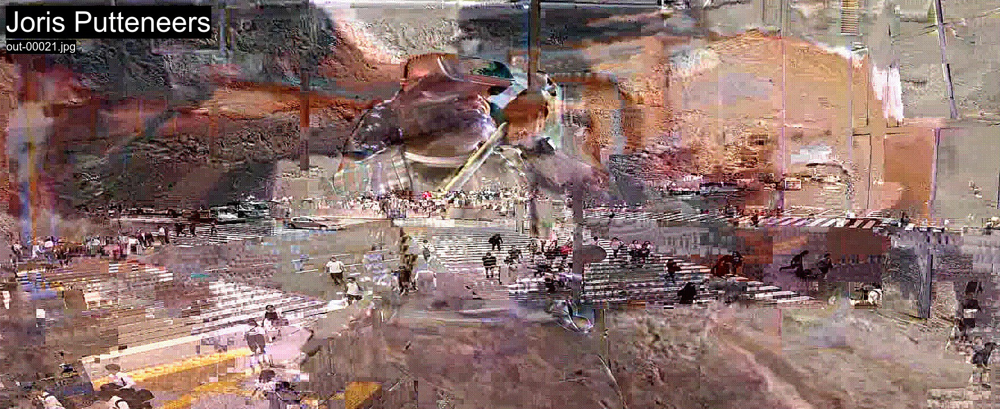

brief
Chose up to eight cc0 videos dipicting a "creative" dichotomy.
examples include:
virtual <-> physical
rural <-> urban
centralized <-> decentralized
manual <-> automated
hard(ware) <-> soft(ware)
...

Through the moshing of these videos we will try to capture their moment of consensus/negotiation.
This workshop uses exclusively opensource command line programs(imagemagick, ffmpeg, ffglitch) and basic UNIX commands.
If the students are on Windows, a Unix shell such as Cygwin is required.
good resources for downloading (cc0) videos are:
• https: https://www.pexels.com/search/videos/videos/
• youtube-dl: https://youtube-dl.org/
• google earth studio: https://www.google.com/earth/studio/
1) installation and setup
the workflow is as follows:
• if you are on windows, use a UNIX terminal like git bash or cygwin.
https://git-scm.com/downloads
• download and install python (add python to PATH)
https://www.python.org/downloads/
• download and install imagemagick (check install ffmpeg)
https://imagemagick.org
• download and install ffglitch (add ffglitch to PATH)
https://ffglitch.org/download/
add -> "C:\Users\bivor\Downloads\ffglitch-0.9.4-win64\ffglitch-0.9.4-win64" to the environment variables.
2) Preparing videos
Locate the downloaded videos in a terminal and run the first script. This script will convert all videos to mpeg-2 files.
Tghe videos are converted to MPEG codecs is that they allow us to easily split and concatenate video files, without needing specialized video editing software.
The codecs are robust enough so that you can cut the video files wherever you want and the decoder will be able to recover most of it.
$ mkdir mpeg2
$ for I in *.mp4;
do
ffgac -i "$I" \
-an -vcodec mpeg2video \
-f rawvideo \
-mpv_flags +nopimb \
-qscale:v 6 \
-r 30 \
-g 90 \
-s 2590x1110 \
-y mpeg2/"${I/.mp4/.mpg}";
done
An explanation of the ffgac options:
-an
disable audio since we only care about video for now.
-vcodec mpeg2video
use MPEG-2 as output codec
-f rawvideo
output file as raw MPEG transport stream.
-mpv_flags +nopimb
this option is ffgac-specific, it will make ffgac not use intra macroblocks for predictive frames.
-qscale:v 6
quality factor: the greater the number, the lower the quality.
-r 30
set frame rate to 30 frames per second.
-g 90
output an I frame at every 90 frames (3 seconds)
-s 2590x1110
set output size to 2590x1110 pixels.
3) Splitting the videos
we will use ffgac to split the video in individual frames. Each file in the frames directory will contain one frame of an input video file. These may be I frames or P frames.
The counter starts at 10 so that all video files are prefixed with 2 digits.
Change into the mpeg2 directory
$ cd mpeg2
$ mkdir frames
$ let x=10
$ for I in *.mpg;
do
ffgac -i "$I" -vcodec copy frames/datamosh_${x}_%04d.raw;
let x=x+1;
done
4) concatenate the videos and split into frames
Now we will randomly concatenate the frames to create our the datamoshed effect.
We seperate the videos into individiual frames. Each frame file contains only one frame. So we have to be creative in choosing which files we will use to concatenate to create the datamoshed video.
Change into the frames directory and see that you will have hundreds or possibly thousands of frames.
$ cd frames
$ cat datamosh_11_0001.raw $(ls | xargs -n 20 | sort --random-sort) > datamosh_concatenated.mp4
This command will randomly sort the chunked frames, 60 frames at a time, and concatenate them all into one video file at datamosh_concatenated.mp4 (you can repeat this command many times to get different random combinations of concatenated configurations).
Because we are using MPEG-2, The file is not corrupted.
Make a new directory and extract 5 still frames each second with ffmpeg.
$ mkdir concat_frames
$ ffmpeg -i "datamosh_concatenated.mp4" -vf fps=3/1 "concat_frames/out-%05d.jpg"
5) Postprocess the frames
Postprocess the frames with shapening, Floyd steinberg dithering, and annotations.
$ cd concat_frames
$ magick convert *.jpg -sharpen 0x1.1 -ordered-dither o8x8,6 \
-fill white -pointsize 50 -undercolor black -bordercolor black -border 5x5 -gravity NorthWest -annotate +15+15 'Joris Putteneers' \
-fill white -pointsize 20 -undercolor black -bordercolor black -border 5x5 -gravity NorthWest -annotate +21+85 '%f' \
-fill white -pointsize 20 -undercolor black -bordercolor black -border 5x5 -gravity SouthWest -annotate +21+23 'negotiating creativity through datamoshing' \
-set -comment "%m:%f %wx%h" \
-set filename:base "%[basename]" "%[filename:base]_dithered.jpg"
6) upload the frames
7) upload your 5 best images to this
google drive .